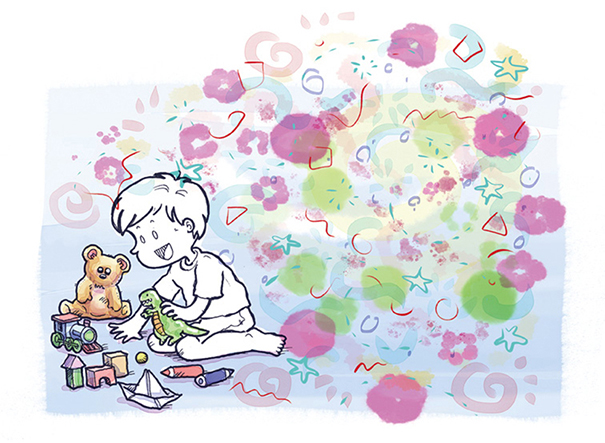

Thomas tinha sonhos e ideias multicoloridas.
Inventava histórias, combinava brincadeiras,
criava mundos inteiros.
A parte de dentro
de sua cabeça era
um lugar muito,
muito divertido.

Descrição de imagem: Um menino, todo em branco, está sentado no chão brincando com um urso, um dinossauro, um trenzinho, alguns blocos, um barco de papel e lápis de cor. O fundo da imagem é colorido, com várias bolas e desenhos pequenos. Fim da descrição.